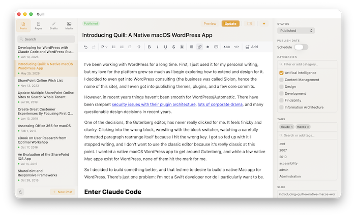
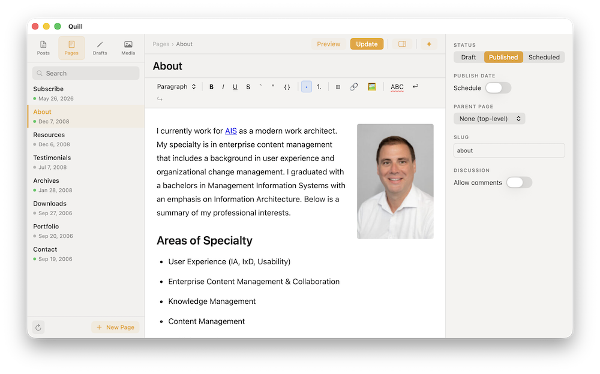
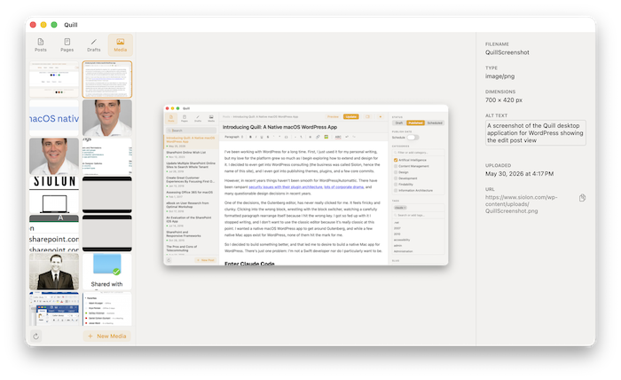
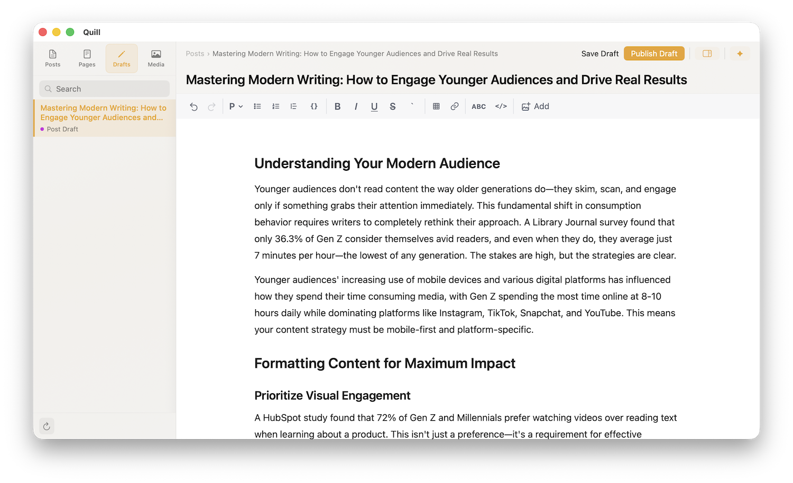
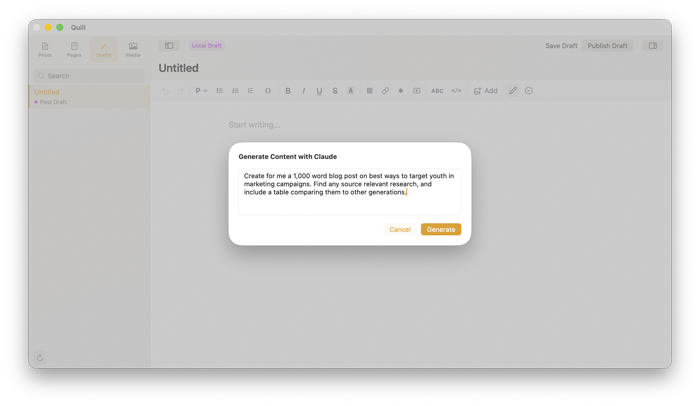

Write, edit, and publish from a native, fast macOS app. Connects directly to your self-hosted WordPress site with all the WordPress capabilities you'd expect.
No subscription · No plugins · Works offline

Editor
Write posts and pages with the full formatting toolkit: headings, tables, code blocks, links, and lists. Drag images from Finder directly into the document and Quill uploads them to your media library in one step.

Media Library
Browse your full WordPress media library without opening the admin area. A thumbnail grid with a details panel shows filename, dimensions, upload date, and source URL. Right-click any file to copy its URL, open in browser, or delete it. Upload with ⌘N, refresh with ⌘R.

Offline Writing
Quill allows to write completely on your Mac without the need to push to WordPress or have an active internet connection. Push drafts to WordPress, schedule posts, or publish directly.

AI Writing Assistant
An optional writing assistant powered by the Claude API and the Haiku model. Transform existing content or write whole articles and review the result before it sticks.

macOS Tahoe with Apple Silicon
May work in older versions but not tested
Self-hosted WordPress 7+
May work in older versions but not tested
WordPress.com is not supported
Quill uses the self-hosted REST API
HTTPS required
The app requires HTTPS to connect
Download and unzip
Download the ZIP, unzip it, and move Quill.app to your /Applications folder.
Generate an Application Password
In your WordPress admin, go to Users → Profile → Application Passwords and create a new one. Copy it, you won't be able to see it again.
Connect your site
Launch Quill. Enter your site URL, WordPress username, and the Application Password. Click Save, you're in.
Input Claude API for Content Generation (Optional)
Create an API key in the Claude Platform Dashboard and enter it into the settings window. You can choose up to 5 posts to build a personal writing style and enable web search.